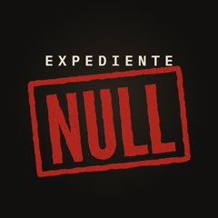

Expediente NullCréditos
Cicada 3301: el acertijo que resolvió un chico de 15 años
Fotografías
- Magicicada septendecim & Magicicada cassini (17-year periodical cicadas) (Flint Ridge, Ohio, USA) 1 (27871819506).jpg — James St. John · CC BY 2.0 · Wikimedia Commons
- 2021-05-16 13 40 11 Brood X periodical cicada exoskeletons just after emergence on a wood post along Old Dairy Road in the Franklin Farm section of Oak Hill, Fairfax County, Virginia.jpg — Famartin · CC BY-SA 4.0 · Wikimedia Commons
- 2021-05-17 16 18 50 Brood X periodical cicada exoskeletons just after emergence under a Pin Oak along Thorngate Drive in the Franklin Farm section of Oak Hill, Fairfax County, Virginia.jpg — Famartin · CC BY-SA 4.0 · Wikimedia Commons
- Uppsala vanalinn suveõhtul.jpg — Sillerkiil · CC BY-SA 4.0 · Wikimedia Commons
- Roanoke from the star, January 2003 (04).jpg — SchuminWeb · CC BY-SA 2.0 · Wikimedia Commons
- Burruss Hall -01- (12349518863).jpg — Ben Schumin from Montgomery Village, Maryland, USA · CC BY-SA 2.0 · Wikimedia Commons
- William Gibson Zero History signing at Forbidden Planet London.jpg — Nikki Tysoe · CC BY 2.0 · Wikimedia Commons
- Llyfr Coch Hergest 240-241.JPG — Hywel Fychan fab Hywel Goch of Buellt · Public domain · Wikimedia Commons
- National Security Agency headquarters, Fort Meade, Maryland.jpg — National Security Agency · Public domain · Wikimedia Commons
- National Security Agency, 2013.jpg — Trevor Paglen · CC0 · Wikimedia Commons
- US Navy 090206-N-8157C-013 An MH-60S Sea Hawk from the.jpg — U.S. Navy photo by Mass Communication Specialist 1st Class Denny Cantrell · Public domain · Wikimedia Commons
- Giant squid, Architeuthis dux Steenstrup 1857, holotype specimen.jpg — Inger Eleanor Winkelmann · CC BY-SA 4.0 · Wikimedia Commons
- Themsensvärdet.jpg — Unknown authorUnknown author · Public domain · Wikimedia Commons
- Seax of Beagnoth futhorc.jpg — BabelStone · CC BY-SA 3.0 · Wikimedia Commons
- Driving cab of a DSB rail vehicle.jpg — Susanne Nilsson · CC BY-SA 2.0 · Wikimedia Commons
- NOIRLab HQ Server Racks (OK upr IMG 0225-CC).jpg — NOIRLab/NSF/AURA/P. Horálek · CC BY 4.0 · Wikimedia Commons
_(Flint_Ridge,_Ohio,_USA)_1_(27871819506).jpg){kind=link}


.jpg){kind=link}
.jpg){kind=link}


.jpg){kind=link}
Vídeo
- Matias_Luge · Licencia de Pixabay · Pixabay
- viarami · Licencia de Pixabay · Pixabay
- Coverr-Free-Footage · Licencia de Pixabay · Pixabay
- Coverr-Free-Footage · Licencia de Pixabay · Pixabay
- PhotoDhaba · Licencia de Pixabay · Pixabay
- Coverr-Free-Footage · Licencia de Pixabay · Pixabay
- elchao · Licencia de Pixabay · Pixabay
- MattHrusc · Licencia de Pixabay · Pixabay
- 2427999 · Licencia de Pixabay · Pixabay
- maraexsoft · Licencia de Pixabay · Pixabay
- Sachingh · Licencia de Pixabay · Pixabay
- SAHN_VIT · Licencia de Pixabay · Pixabay
- RafterJr72 · Licencia de Pixabay · Pixabay
- Alban_Gogh · Licencia de Pixabay · Pixabay
- kidmagnificent · Licencia de Pixabay · Pixabay
- KIMDAEJEUNG · Licencia de Pixabay · Pixabay
- TungArt7 · Licencia de Pixabay · Pixabay
- AttilaPergel · Licencia de Pixabay · Pixabay
- Hans · Licencia de Pixabay · Pixabay
- cipnt · Licencia de Pixabay · Pixabay
- Vimeo-Free-Videos · Licencia de Pixabay · Pixabay
- AttilaPergel · Licencia de Pixabay · Pixabay
- jevtajevtic7 · Licencia de Pixabay · Pixabay
- Life-Of-Vids · Licencia de Pixabay · Pixabay
- nanoslavic · Licencia de Pixabay · Pixabay
- RAHADstudio · Licencia de Pixabay · Pixabay
- Coverr-Free-Footage · Licencia de Pixabay · Pixabay
- Coverr-Free-Footage · Licencia de Pixabay · Pixabay
- Republica · Licencia de Pixabay · Pixabay
- Coverr-Free-Footage · Licencia de Pixabay · Pixabay
- davidargeta · Licencia de Pixabay · Pixabay
- FreeCreativeStuff · Licencia de Pixabay · Pixabay
- waiguobox · Licencia de Pixabay · Pixabay
- RafterJr72 · Licencia de Pixabay · Pixabay
Satélite
- Sentinel-2 cloudless – https://s2maps.eu by EOX IT Services GmbH (Contains modified Copernicus Sentinel data 2016) · CC BY 4.0
Música
- "CAVERNS" · Density & Time · Biblioteca de audio de YouTube
- "Fog Mist" · TrackTribe · Biblioteca de audio de YouTube
- "A Mystical Experience" · Unicorn Heads · Biblioteca de audio de YouTube
- "David's Dream" · Houses of Heaven · Biblioteca de audio de YouTube
- "Lurks" · ELPHNT · Biblioteca de audio de YouTube
- "False Vacuum Decay" · The Grey Room / Density & Time · Biblioteca de audio de YouTube
- "Rewired" · The Whole Other · Biblioteca de audio de YouTube
- "Obon Fog" · The Mini Vandals · Biblioteca de audio de YouTube
- "EBB" · Density & Time · Biblioteca de audio de YouTube
Las recreaciones marcadas en pantalla como RECREACIÓN se han generado con IA.